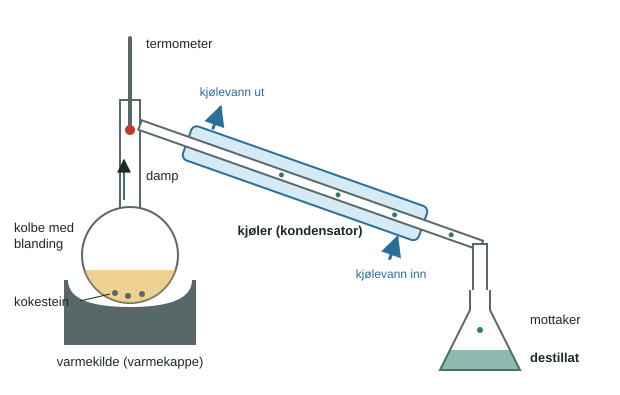

Destillasjon
Destillasjon er den vanligste måten å skille væsker på i prosessindustrien. Et raffineri lager bensin og diesel av råolje på denne måten, og spritfabrikker får ut etanol. Mange fabrikker gjenvinner også brukte løsemidler ved å destillere dem. På laben bruker du det samme prinsippet i liten skala.
Prinsippet: koke og kjøle
Destillasjon skiller væsker som har ulikt kokepunkt. Det skjer i to steg:
- Koke: Blandingen varmes til den koker. Stoffet med lavest kokepunkt fordamper lettest, og derfor blir det mest av det i dampen.
- Kjøle: Dampen ledes bort og kjøles slik at den blir væske igjen. Det kalles å kondensere dampen.
Væsken du samler opp, kalles destillat. Det som blir igjen i kolben eller tanken, kalles rest eller bunnprodukt. Et stoff som fordamper lett og har lavt kokepunkt, kalles flyktig.
Hvorfor stoffer har ulikt kokepunkt, lærer du på siden Svake bindinger og egenskapene til vann i Kjemiske prinsipper. Hva som skjer når et stoff koker, står på siden Temperatur og varme i Fysiske prinsipper.
Dampen blir ikke helt ren
Etanol koker ved 78 °C og vann ved 100 °C. Når en blanding av etanol og vann koker, fordamper begge stoffene, men dampen inneholder mer etanol enn væsken. Destillatet blir derfor sterkere enn blandingen du startet med, men det er ikke ren etanol.
Jo større forskjell det er i kokepunkt, jo bedre skilles stoffene i én destillasjon. Er kokepunktene nær hverandre, eller må produktet være veldig rent, må dampen kondenseres og fordampes mange ganger. Det kalles fraksjonert destillasjon, og det gjøres i en destillasjonskolonne. Den ser vi på på neste side.
Enkel destillasjon på laben

Slik virker delene:
- Kolbe og varmekilde: Blandingen varmes i en rund kolbe, ofte i en varmekappe som omslutter kolben. Fyll kolben høyst to tredjedeler full.
- Kokestein: Små, porøse biter som legges i kolben før du varmer. De gjør at væsken koker jevnt med små bobler. Uten dem kan væsken bli varmere enn kokepunktet og så koke over i ett støt. Det kalles støtkoking. En magnetrører gjør samme nytte.
- Termometer: Toppen av kula skal stå i høyde med den nederste kanten av sidearmen. Da måler du temperaturen på dampen som går til kjøleren, og ikke temperaturen i væsken.
- Kjøler: Et rør med en kappe rundt, der kaldt vann renner. Dampen gir fra seg varme til kjølevannet og kondenserer. Kjøleren kalles også kondensator. Kjølevannet går inn nederst og ut øverst. Da blir kappa helt full av vann, og det kaldeste vannet møter den kaldeste delen av destillatet. Dette kalles motstrøm. Du kan lese mer om motstrøm på siden Energibalanse i en varmeveksler.
- Mottaker: En kolbe som samler opp destillatet. Oppsettet skal være åpent mot lufta ved mottakeren, slik at det ikke bygges opp trykk.
Temperaturen på termometeret forteller hva som destillerer. Mens det er mye av det flyktige stoffet i kolben, holder temperaturen seg lav og stiger sakte. Når det flyktige stoffet tar slutt, stiger temperaturen raskere mot kokepunktet til det andre stoffet. Da kommer det mer av stoffet med høyest kokepunkt over, og du bytter mottaker eller stopper.
Destillasjon i industrien
Batchdestillasjon
I en batchdestillasjon fylles en kjele med blanding, og så destilleres den til den er ferdig. Utstyret er det samme som på laben, bare større:
- en kjele som varmes, ofte med damp i en kappe eller i en varmespiral
- et rør som leder dampen til en kondensator, som er en varmeveksler med kjølevann
- tanker som tar imot destillatet
Destillatet endrer seg underveis. Først kommer det mest av det mest flyktige stoffet. Senere kommer det mer av stoffene med høyere kokepunkt. Operatøren skifter derfor tank underveis, slik at destillatet deles i flere porsjoner. Hver porsjon kalles en fraksjon. Batchdestillasjon passer for små mengder og når innholdet i blandingen varierer, for eksempel ved gjenvinning av løsemidler eller produksjon av brennevin.
Kontinuerlig destillasjon
Store anlegg, som raffinerier, destillerer kontinuerlig. Blandingen pumpes inn hele tiden, og produktene tas ut hele tiden. Da brukes en destillasjonskolonne. Råolje skilles i fraksjoner med ulikt kokepunkt. Gass og bensin har lavest kokepunkt og tas ut øverst. Så kommer parafin og diesel. Tungolje har høyest kokepunkt og blir igjen i bunnen. Forskjellen på batch og kontinuerlig drift står på siden Batch og kontinuerlig drift.
Vakuumdestillasjon
Kokepunktet blir lavere når trykket blir lavere. Ved vakuumdestillasjon senkes trykket med en vakuumpumpe, slik at blandingen koker ved lavere temperatur. Det brukes når:
- stoffet tåler dårlig varme og kan brytes ned, for eksempel smaksstoffer og noen legemidler
- stoffet har så høyt kokepunkt at det ved vanlig trykk måtte varmes så mye at det begynner å brytes ned. I raffineriet destilleres resten fra den første kolonnen videre under vakuum.
Grensen for destillasjon
Noen blandinger kan ikke skilles helt med vanlig destillasjon. Etanol og vann er et eksempel. Når destillatet har nådd omtrent 96 % etanol (regnet i masse), har dampen og væsken samme sammensetning. Da blir destillatet ikke sterkere uansett hvor mange ganger du destillerer. En slik blanding kalles en azeotrop. Etanol til drivstoff må derfor gjennom et ekstra trinn som fjerner det siste vannet.
Det trengs mye energi for å fordampe en væske, og den energien går over i kjølevannet når dampen kondenserer. Derfor er destillasjon en av de mest energikrevende operasjonene i et anlegg. Mange anlegg bruker den varme dampen eller det varme bunnproduktet til å forvarme blandingen som skal inn. Hvor mye energi som trengs, regner du ut på siden Varme og energi i prosesser.
- Brennbare damper: Mange stoffer som destilleres, som etanol og løsemidler, er brennbare. Bruk varmekappe eller varmebad, ikke åpen flamme. Destiller i avtrekksskap.
- Aldri lukket system: Varme gir damp og trykk. Et lukket oppsett kan sprekke. På laben skal oppsettet være åpent ved mottakeren. I industrien har kolonner og kjeler sikkerhetsventiler.
- Kokestein før oppvarming: Legg aldri kokestein i en væske som allerede er varm. Da kan den koke over i ett støt. Har du glemt kokesteinene, lar du væsken kjøle seg ned før du legger dem i.
- Kjølevann først: Slå på kjølevannet før du varmer. Uten kjøling slipper brennbar damp ut i rommet. Fest slangene med slangeklemmer, så de ikke løsner.
- Vakuum: Glass under vakuum kan implodere, altså knuses innover. Bruk bare rundkolber og glass uten riper eller sprekker, og bruk vernebriller.
- Ikke destiller til tørrhet: La det alltid være litt væske igjen i kolben. Kolben kan bli overopphetet og sprekke, og noen rester kan være eksplosive.
- Varme flater, damp og glass: se Glass, gass, varme og biologiske farer i HMS.
Test deg selv
1. Hva er det destillasjon utnytter for å skille stoffer?
- At stoffene har ulik størrelse
- At stoffene har ulikt kokepunkt
- At stoffene reagerer med hverandre
Stoffet med lavest kokepunkt fordamper lettest og blir det mest av i dampen. Ulik størrelse utnyttes i filtrering og sikting, ikke i destillasjon.
2. Hvor skal termometerkula stå i en enkel destillasjon?
- Nede i væsken i kolben
- Med toppen av kula i høyde med nederste kant av sidearmen
- I mottakerkolben
Der måler termometeret temperaturen på dampen som går til kjøleren. Den forteller hvilket stoff som destillerer. Står kula for høyt, når ikke dampen helt opp til den, og temperaturen blir for lav.
3. Hvorfor går kjølevannet inn i den nederste enden av kjøleren?
- Fordi vannet renner lettere oppover
- Fordi kappa da blir helt full av vann, og det kaldeste vannet møter den kaldeste delen av destillatet
- Fordi dampen skal varmes opp på vei ned
Med vannet inn nederst blir det ingen luftlomme i kappa, og kjølingen blir best mulig. Vannet og dampen går hver sin vei. Det kalles motstrøm.
4. Du destillerer en blanding av etanol og vann. Temperaturen på termometeret begynner å stige godt over 78 °C. Hva betyr det?
- At all blandingen er destillert
- At kjøleren ikke virker
- At det nå kommer mer vann over i destillatet
Mens det er mye etanol i kolben, holder temperaturen seg lav, nærmere 78 °C. Når etanolen tar slutt, stiger temperaturen mot 100 °C, og det kommer mer vann over. Da bytter du mottaker eller stopper.
5. Hvorfor brukes vakuumdestillasjon?
- For at destillatet skal bli kaldere
- Fordi stoffene koker ved lavere temperatur når trykket er lavt
- Fordi vakuum fjerner vannet fra blandingen
Lavere trykk gir lavere kokepunkt. Da kan stoffer som tåler dårlig varme, eller som har svært høyt kokepunkt, destilleres uten at de må varmes så mye.
Ordliste
| Begrep | Forklaring | Engelsk |
|---|---|---|
| destillasjon | En metode som skiller væsker med ulikt kokepunkt. Blandingen varmes så den fordamper, og dampen kjøles så den blir væske igjen. | distillation |
| destillat | Væsken som samles opp etter at dampen er kjølt ned i en destillasjon. Den inneholder mest av det flyktige stoffet. | distillate |
| bunnprodukt | Det som blir igjen i kolben, kjelen eller bunnen av kolonnen etter destillasjon. Det inneholder mest av stoffene med høyest kokepunkt. Kalles også rest. | bottoms |
| flyktig | Et stoff som fordamper lett, fordi det har lavt kokepunkt. | |
| kondensere | Når en gass eller damp blir til væske, for eksempel fordi den kjøles ned. | |
| motstrøm | Koplingsmåte der strømmene i en varmeveksler går mot hverandre. Den flytter mest varme og er vanligst i industrien. | counter-current flow |
| kondensator | En varmeveksler som kjøler damp slik at den blir væske. På laben kalles den ofte kjøler. | condenser |
| kokestein | Små, porøse biter som legges i væsken før oppvarming, slik at den koker jevnt og ikke støtkoker. | boiling chips |
| støtkoking | Når en væske blir varmere enn kokepunktet og så koker kraftig i ett støt. Væsken kan sprute ut av kolben. | |
| fraksjon | En porsjon av destillatet med stoffer som koker innenfor et bestemt temperaturområde, for eksempel bensin eller diesel fra råolje. | fraction |
| fraksjonert destillasjon | Destillasjon der dampen kondenseres og fordampes mange ganger i en kolonne, slik at stoffene skilles bedre. | fractional distillation |
| vakuumdestillasjon | Destillasjon ved lavt trykk. Da koker stoffene ved lavere temperatur. | vacuum distillation |
| azeotrop | En blanding som koker uten at sammensetningen endrer seg, fordi dampen har samme sammensetning som væsken. Den kan ikke skilles mer med vanlig destillasjon. |
Les mer
- Mekaniske, termiske og kjemiske operasjoner: hvorfor destillasjon er en termisk operasjon.
- Separasjon i Fysiske prinsipper: massebalanse når en blanding skilles.
- Temperatur og varme i Fysiske prinsipper: kokepunkt og trykk.
Om kildene: Teksten, eksemplene og figurene på denne siden er laget for dette nettstedet. Siden bygger på undervisningsopplegg i kjemiprosess- og laboratoriefag ved Sauda vgs, som er utarbeidet med utgangspunkt i blant annet Kjemien stemmer, Laboranten og åpne nettkilder.